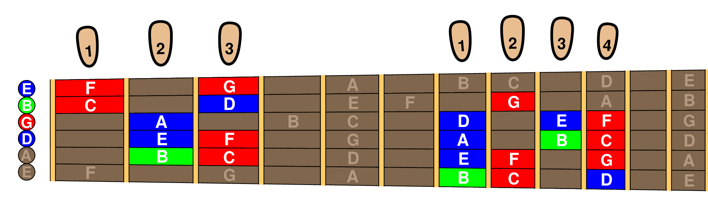

Beginning Fretboard Exercises
For Guitar Sightreading
J. J. Olson

Contents
Who, What, Where and Why
Before We Get Started
Learn This One Page
Group A Exercises: Your First Six Notes
Group B Exercises: The Full Octave
Group C Exercises: High D and E
Group D Exercises: High F and G
Group E Exercises: Low B
Group F Exercises: Wider Range Exercises
Exercise Index
Name Index
IMSLP
Copyright © 2025 by J. J. Olson -- Freely available as
IMSLP-DRAFT
2025/09/15 under
Creative Commons Attribution 4.0 International License
-- free to distribute, modify and perform